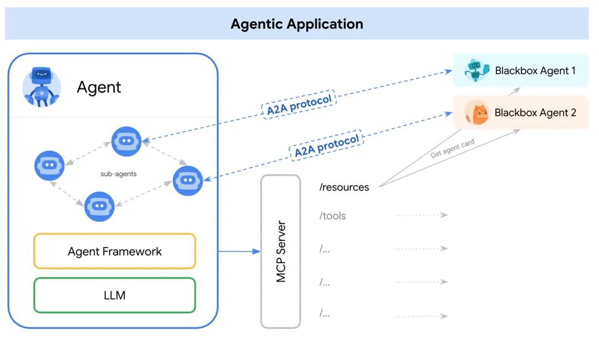
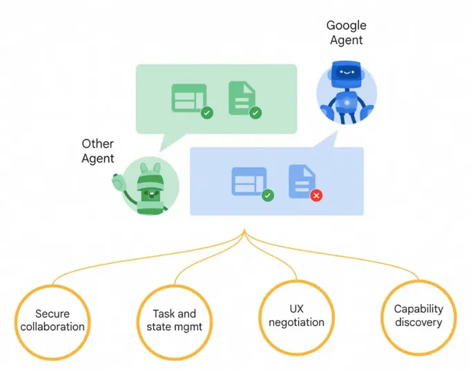
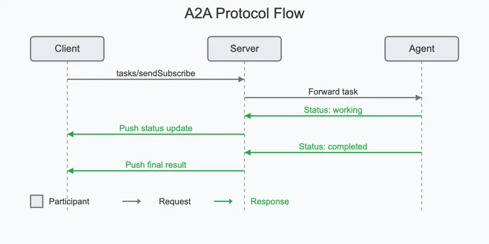

3 谷歌 A2A 与 Anthropic MCP 协议深度解析

当今人工智能领域正从单一模型走向多智能体系统（Multi-agent Systems）。
简单来说，智能体（Agent）指能够自主感知、决策并行动的 AI 实体，例如能帮你预订行程的助手、自动分析数据的机器人等。
随着各种专长的 AI 智能体不断出现，不同智能体间如何交流协作，成为新的挑战。就好比各国大使馆挤在同一栋楼里，却缺乏统一外交规范：每个智能体“各说各话”、接口各异，合作成本居高不下。
为解决这一痛点，业界提出两个备受瞩目的开放协议：谷歌家的Agent-to-Agent (A2A) 协议，以及 Anthropic 公司的 MCP 协议（即 Model Context Protocol，模型上下文协议）。
这两个协议旨在为 AI 智能体建立一种通用沟通方式，被视作 AI 生态中未来“通用语言”或“通信协定”的有力候选。
Agent2Agent vs MCP
Agent2Agent（A2A）协议由谷歌主导开发，定位为跨平台、跨厂商的 AI 智能体对话标准。它让不同来源的智能体彼此“加好友”，实现安全通信、信息交换与协同行动。
MCP 协议则由 Anthropic（Claude 模型的开发公司）提出，被称为 AI 行业的“USB-C 接口”——旨在统一大型语言模型（LLM）与外部工具/数据源连接的标准，让模型方便地调用各种资源。
简单说，MCP 更关注“模型与工具的对接”，而 A2A 聚焦“智能体与智能体的对话”。
这两种协议为多智能体协作提供了互补的机制：
- A2A 如同让 AI 智能体拥有了外交会谈的直连专线，解决Agent 间直接对话的问题；
- MCP 则像实时翻译和资源共享系统，解决智能体与外部信息源对接的问题。
二者结合起来，相当于为 AI 世界打造了一个“联合国级”的沟通协定，让智能体之间既能无障碍交流，又能方便地获取所需工具和数据。
下来，我们将深入剖析 A2A 和 MCP 各自的技术标准、底层原理、设计理念，以及它们如何在多智能体系统中促进协作通信机制。文章也将比较两者在 AI 智能体生态中的地位与影响，并通过一个实际应用案例说明它们在智能体分工通信方面的差异。

谷歌 Agent-to-Agent (A2A) 协议详解
设计理念：打破智能体“信息孤岛”
谷歌的 A2A 协议诞生背景在于，多智能体生态下各代理各自为政，缺乏互通标准。A2A试图成为智能体之间的中间件，让不同开发者、不同架构的 AI 代理可以无缝对接。
其设计哲学强调开放互操作性（Interoperability）：无论智能体底层使用何种框架或模型，只要遵循 A2A 协议，即可彼此通信协作。谷歌希望通过这个开放标准，促进一个多智能体协同工作的生态系统，充分释放 AI 协作带来的生产力提升。
为达成这一愿景，A2A从一开始就联合了广泛的产业伙伴制定标准。2025年4月协议发布时，已有包括Atlassian、Salesforce、SAP、MongoDB、LangChain等50多家技术公司参与共建。这种多方共识为A2A打下了成为行业标准的基础，也表明各界对统一协议的需求之殷切。
A2A 名称直观地表明了目的：Agent-to-Agent，即智能体直接对话协作。它力求让 AI 代理能像人类团队那样分工合作，共同完成复杂任务，而不是各自为战，A2A 相当于为 AI 智能体提供了一个安全通信的“网络层”，赋予它们共享语言和安全信道，藉由协作变得更聪明。其核心理念包括：
- 通用性：为所有智能体提供统一沟通方式，不局限于任何厂商或平台。
- 自治性：允许智能体在各自内部仍保持自主决策过程（Opaque Execution），只通过协议分享必要的信息，不暴露内部机密。
- 增强协作：通过共享上下文和结果，多个智能体协同工作可以比单个智能体更高效，解决单个模型难以处理的复杂问题。
- A2A 的设计初衷在于打破智能体的“信息孤岛”，让 AI 代理之间真正形成一个互联互通的网络，实现“1+1>2”的协作效应

协议架构与结构：客户端/远程端模型与 Agent Card
A2A 协议采用典型的客户端-服务端架构（Client-Server Model）。
在一次 A2A 交互中，一方扮演客户端智能体（Client Agent），负责发起任务请求；另一方扮演远程智能体（Remote Agent），负责接收任务并执行。
- 需要注意的是，这里的“客户端/服务端”只是一种角色划分，同一智能体在不同情境下都可以动态地担当请求发起者或任务执行者。
- 例如，在一个多步工作流中，智能体 A 可能向智能体 B 请求信息（此时 A 为客户端，B 为远程端），而随后 B 又可能将处理结果交由 A 再做进一步分析（此时 A/B 角色对调）。
Agent Card
为了让智能体彼此发现对方并了解对方能力，A2A 引入了Agent Card智能体卡片的概念。
Agent Card 是一个公开的元数据文件，通常托管在智能体服务端的固定 URL（如 /.well-known/agent.json），里面以 JSON 描述了该智能体的标识、版本、提供的技能/功能、端点地址以及认证要求等信息。当一个智能体需要寻找可以帮忙完成某任务的伙伴时，它会先访问候选智能体的 Agent Card，了解对方是否具备所需能力。
例如，一个需要翻译功能的智能体可以检索 Agent Card 列表，找到注明提供“翻译技能”的远程智能体，然后通过 A2A 与之建立联系。Agent Card机制类似于服务注册表，方便智能体在茫茫“Agent 海”中发现彼此，并作为沟通的第一步。正如 A2A 规范所述，Agent Card 扮演了能力发现（Capability Discovery）的关键角色。
A2A 协议的消息结构围绕任务（Task）展开。每一次智能体间的交互本质上被建模为一个Task，对应某个需要完成的工作单元。任务由客户端智能体发起，通过调用远程智能体的接口发送初始请求消息。协议定义了 Task 对象应包含的信息以及其状态生命周期。
- 典型情况下，一个任务会有唯一的 Task ID，以及当前状态（如提交中、进行中、等待输入、已完成等）。
- 在任务上下文中，智能体双方通过交换消息（Message）来交互：客户端智能体的消息通常代表用户的请求（角色标记为“user”），远程智能体的消息则代表智能体回复或行动结果（角色标记为“agent”）。
- 每条消息可以包含一个或多个部件（Part），部件是消息的基本内容单元，比如一段文本、一个文件、或一段结构化数据。
- 此外，远程智能体在完成任务后，会生成工件（Artifact）作为最终输出结果，也包含若干部件。例如，在一个文档处理任务中，Artifact 可能是远程智能体提取出的表格数据（以文件形式附在部件中）。

通过上述架构，A2A 将智能体对话抽象成“发现能力 -> 发起任务 -> 双方对话 -> 完成任务”的过程。
这种结构设计使协议具备很高的通用性。例如，它并不限定任务内容必须是文本，对二进制文件、结构化数据等同样兼容；也不限定某种任务流程，可支持单轮问答或多轮交互。总而言之，A2A 架构提供了一个灵活的框架，让各种异构智能体能以统一的方式互相调用彼此的能力，协同完成任务。
通信方式与语义层：基于 Web 标准的多模态消息传递
A2A 协议的通信方式构建在成熟的 Web 技术之上，最大程度复用了现有标准，这也是其设计原则之一，A2A 通信主要采用HTTP作为传输协议，消息编码为JSON格式，并结合JSON-RPC风格进行远程过程调用语义 。
此外，为了支持实时更新和事件推送，A2A 还使用SSE（Server-Sent Events）和可选的 Webhook 推送机制，实现服务器到客户端的异步消息流。通过使用 HTTP/JSON 这些广泛支持的标准，A2A 很容易集成到现有 IT 系统中，无需特殊中间件，大大降低了部署门槛。
请求-响应模式是 A2A 最基础的通信模式。客户端智能体通过 HTTP 请求向远程智能体的 API 发送 Task 请求，远程智能体处理后返回结果。
这种模式适用于短任务或同步交互。当任务可能较长或需要持续交互时，A2A 提供了轮询（Polling）和事件流（Streaming）两种方案来跟踪任务状态
- 轮询模式：客户端定期调用远程端提供的查询接口，检查任务状态是否完成并获取结果。这是标准的 HTTP 短连接用法，实现简单，但实时性略有不足（取决于轮询频率）。
- SSE模式：远程智能体在初始请求时保持连接不关闭，通过 Server-Sent Events 向客户端连续推送任务进展更新消息。客户端可即时收到状态变更或阶段性产出。这种模式适合持续几秒到几分钟的中短期任务，提供了准实时反馈机制。例如，远程智能体在执行一个复杂查询时，可以不断发送“进度 30%…50%…”的更新，让客户端知晓任务尚在进行。
- 推送模式：对于更长时间运行的任务，A2A支持Push Notification。客户端预先提供一个回调 URL（Webhook），远程智能体在任务完成或状态变化时，主动向该 URL 发送通知。这样客户端无需一直保持连接或轮询，适合需要数小时甚至数天、且可能有人类参与中间环节的任务。例如，一个涉及人工审核的任务，远程智能体可以在需要人工输入时发送通知给客户端，再由客户端协调用户提供额外信息。
通过上述组合，A2A 既覆盖了短周期、高互动的对话，也支持长周期、松耦合的协作，兼顾实时性与可靠性。正如谷歌所强调的，A2A 从设计上考虑了对长时间运行任务的支持，可以处理从几毫秒的快速请求到跨越数天的人机协同任务。在整个过程中，协议允许持续的状态同步与反馈，让双方智能体始终了解任务的最新进展。
A2A在通信内容上也是模态无关（Modality Agnostic）的。
消息的部件（Part）机制使其能够传输多种类型的数据：文本、图像、音频、视频流甚至富交互界面等。
每个 Part 都有一个内容类型标识（content type），远程与客户端可以据此协商所需的格式，确保对方能正确呈现。这一特性被称为用户体验协商（User Experience Negotiation）。例如，如果远程智能体生成了一张图片作为结果，而客户端界面支持渲染图像，那么远程智能体会将该结果作为 image/png 类型的部件发送。客户端收到后可直接展示图片给用户。如果客户端不支持富媒体，它也可以要求远程智能体改发文字描述。通过在消息中明确协商交互形式，A2A 保证了不同能力前端之间的良好兼容。这对于支持语音对话、视频输出等多模态人机交互非常关键。
A2A 并未定义新的消息语义层次，而是充分利用了 JSON-RPC 的请求/响应格式来封装任务调用。每个任务请求本质上可以看作一次 RPC 调用：指定调用的方法（例如 tasks/send）和参数（包含用户消息、任务ID等）。远程智能体处理后返回结果或错误码。
这种语义设计简单直观，同时通过在 JSON 中嵌入丰富字段，实现了高层次的语义表达。例如消息的角色（user/agent）、任务状态、错误信息等，都在 JSON 结构里有明确标记。这种清晰的语义层定义确保各智能体实现者对协议含义有一致理解，不会“各说各话”。A2A 包含了一个共享语义理解层，确保不同代理能够无歧义地解析彼此的意图、上下文和中间结果。
综上，A2A 在通信方式上充分借鉴了现有 Web 标准，提供了灵活的同步/异步机制和丰富的数据类型支持。在语义层上，它定义了任务、消息、部件等抽象和状态机，使智能体间交流有章可循。这些共同构成了 A2A 协议强大的通信基础，使其能够适应各种复杂场景下的智能体协作需求。
任务管理与状态同步：生命周期机制确保协作有序
在 A2A 协议中，任务（Task）概念贯穿始终，协议围绕任务的创建、执行、完成构建了一套完善的生命周期管理机制。这种机制类似于流程管理或会话管理，确保多智能体协作过程井然有序，并且双方对当前进展和下一步都有一致认知。
当客户端智能体发起一个任务时（调用 tasks/send 接口），远程智能体会为该任务分配一个唯一的Task ID，并将任务状态标记为 submitted（已提交）。随后远程智能体开始处理，将状态更新为 working（进行中）。如果任务需要进一步的输入（例如远程智能体需要澄清问题或索取额外数据），则可以把状态置为 input-required（等待输入），并通过消息请求客户端提供更多信息。客户端收到此状态后，可据此发送追加的消息（通过同一个 Task ID 调用 tasks/send），相当于在同一任务上下文中继续对话。
一旦远程智能体完成任务或遇到无法完成的情况，就会将状态标记为终结态：completed（已完成）、failed（失败）或 canceled（取消）之一。同时，远程智能体会返回最终的Artifact（工件）结果或错误信息。客户端智能体则在感知到任务进入终态后，结束后续交互或采取相应动作（如向用户展示结果）。
整个过程中，A2A 协议规定了明确的状态同步流程，使得客户端和远程智能体对任务的当前阶段保持同步认知。配合前文所述的 SSE 和推送机制，客户端可以随时获取任务状态的变化通知。例如，在长任务场景下，远程智能体可以周期性地发送 TaskStatusUpdateEvent（任务状态更新事件）给客户端，告知目前进展到了何种状态。又或者，当远程智能体产出一个阶段性 Artifact（如部分结果文件）时，可以通过 TaskArtifactUpdateEvent 事件发送给客户端，实现流式输出。这样，哪怕是执行数小时的大型任务，用户（通过客户端代理）也能实时了解到任务在做什么、进度如何，不至于“黑箱等待”
任务生命周期机制还确保了多轮交互的有序进行。在 input-required 状态下，多次消息往返都归属于同一Task，而且必须遵循请求-响应的时序。远程代理不会同时处理多个并行输入，客户端也知道何时该提供附加信息。这避免了在复杂对话中出现混乱。例如，一个问诊类任务中，医生代理（远程）可能多次问症状，患者代理（客户端）多次回答，都在一个 Task 会话内逐步推进，直到诊断完成标记 completed。生命周期的存在让这样的对话协作上下文连贯且易于管理。
可以将 A2A 的任务管理类比为项目协作中的工单系统：每个 Task 就是一张工单，从创建、处理中、待反馈到关闭有全流程状态。所有相关交流都记录在线程（消息序列）中。这不仅使计算机程序易于处理，也方便将来审计和追踪。例如，对于企业级应用，IT 管理员可以查看某次任务执行记录，看到哪个代理发起了请求、哪个代理完成了任务、中途交换了哪些信息、结果如何。这对于可靠性和责任归属也很重要——在高度自治的多智能体系统中，有了任务生命周期日志，才能追溯问题、调优系统。
A2A 的任务与状态管理机制确保了智能体协作“有人负责，每步可查”。它提供了对协作过程的结构化描述和控制，使多个异构智能体能够在同一任务上下文中同步工作、不偏不倚地朝着共同目标推进。这种井井有条的协同方式大大提高了复杂工作流的自动化可行性，也为多智能体系统在真实场景的大规模部署打下基础。
安全与开放性：企业级安全设计与开源生态
由于定位于跨组织、跨平台的智能体交互，A2A 协议非常重视安全性。谷歌在设计时采用了“默认安全（Secure by default）”原则，将企业级身份验证和授权机制融入协议。A2A 支持的认证方式与 OpenAPI 等现有接口标准看齐，例如支持 OAuth 2.0、API Key、JWT 等方案来验证调用者身份。这意味着，如果一个智能体服务只希望被授权的客户端访问，可以要求对方在 HTTP 请求头携带特定的认证令牌，未认证的请求将被拒绝。通过这种设计，A2A 能够在开放互通和安全控制间取得平衡，让企业放心地开放自家 AI Agent 的能力给合作伙伴，而不担心数据泄露或滥用。
另外，A2A 通信可以结合双向 TLS（Mutual TLS）来确保通信信道安全加密、防窃听篡改。这对跨云环境、跨公司网络的 Agent 对话尤为重要。比如一个公司内部的财务AI代理与外部供应商的物流AI代理通过A2A协作下单，启用 mTLS 可防止中间人攻击，保障交流内容保密。A2A 强调智能体仅共享任务相关的输入输出，不暴露各自内部机密算法或完整数据。这一点确保了不同组织部署的 Agent 可以合作，但不会泄漏商业敏感信息，从而消除企业在采用开放代理协作时的后顾之忧
在开放性方面，A2A完全开源，并鼓励社区共建。谷歌已将协议的草案规范、参考实现代码等发布在 GitHub 上。开发者可以自由查看 A2A 的技术细节，实现自己的兼容版本，或向官方贡献改进建议。A2A 项目采用 Apache 2.0 开源许可证，对商业友好，无版权顾虑。谷歌还提供了Agent Developer Kit (ADK)开发套件，以及多种语言的示例代码（如 Python 和 JavaScript）来帮助开发者快速上手。例如，ADK 可以将现有的对话式 AI 框架封装为 A2A 兼容 Agent，无需从零开始。目前开源社区已经出现了一些集成尝试，如 CrewAI、LangGraph、GenKit 等代理框架都推出了与 A2A 对接的模块。这些工具降低了开发门槛，让更多人能把自己的 AI Agent 接入 A2A 网络。
A2A 并不与 Anthropic 的 MCP“争夺地盘”，相反谷歌明确将其定位为对 MCP 的补充（Complementary）。谷歌在官方博客中特别指出，“A2A 是开放协议，补充了 Anthropic 的 MCP 协议（MCP 为智能体提供有用的工具和上下文）”。这体现出 A2A 项目在生态合作上的开放态度。实际上，A2A 网站的文档甚至专门有一节介绍 A2A 与 MCP 如何协同工作。可以预见，未来 A2A 和 MCP 将经常被组合使用，形成从 Agent-Agent 沟通到 Agent-Tool 使用的全套解决方案。因此，A2A 团队也非常重视与 MCP 的兼容和协作示范（下文我们将详细讨论二者关系）。
A2A 协议在安全和开放两方面都下了足功夫。一方面提供企业级的安全机制保证通信和权限，另一方面以开源和协同的方式推动协议成为行业通用标准。这种开放但安全的设计平衡，为 A2A 在严肃商用场景中落地奠定了基础，也为其迅速普及创造了条件。正因如此，业内称 A2A 有望成为“Agent 时代的 HTTP”——既安全可靠，又无所不在的通信底层。
综合而言，Agent2Agent (A2A) 协议为 AI 智能体之间的协作提供了完整而强健的解决方案。在结构上，它采用客户端-远程端模型和 Agent Card 机制，实现智能体能力曝光与动态发现；在通信上，基于 HTTP/JSON-RPC/SSE 等标准，支持多模态的数据交换和实时/长时并存的交互模式；在过程管理上，引入任务生命周期和状态同步，让多轮对话与长流程执行都有据可循；在安全上，则内建认证加密措施确保跨主体合作的信任。A2A 的设计注重兼容性与实用性，让各类 AI Agent 能像人类团队一样“发现同事”并协同完成任务。这标志着 AI 代理从各自为政走向互联协作的关键一步，被视作开启Agent 互操作新时代的重要里程碑。
Anthropic 模型上下文协议 (MCP) 详解
背景初衷：连接大模型与外部世界
MCP（Model Context Protocol，模型上下文协议）由 Anthropic 公司于 2024 年 11 月首次提出并开源。在推出多版 Claude 模型后，Anthropic 意识到一个问题：再聪明的语言模型，如果与外部数据和工具隔绝，也会大大受限。模型往往“困”在训练语料中，面对新信息、新任务时力不从心，而每增加一个新数据源都需要定制集成，既麻烦又难以扩展。
为了解决模型孤岛现象，Anthropic 提出了 MCP 协议，希望打造一个通用的桥梁，把 AI 模型和各类外部资源连接起来。
正如媒体所称，MCP 的使命是“打破信息孤岛，让 AI 拥有读取工具和实时数据的万能接口”。它被誉为 AI 领域的“USB 接口”或“万能适配器”，统一了过去各家模型插件/工具调用的不兼容标准。有了 MCP，不同模型就像拥有统一插口，可以方便地接入数据库、搜索引擎、企业应用等外部系统，获取最新信息或执行操作。这对提升模型实用性和上下文相关性有巨大帮助。
Anthropic 提出 MCP 还有一层战略考量：
通过抢占这一生态标准，构筑自有 AI 助手生态圈。Anthropic 希望借 MCP 打造“可靠、可解释、可操控”的通用 AI 系统，将各种工具纳入 Claude 的掌控范围，从而增强 Claude 及其生态的竞争力。
在 OpenAI 和谷歌等巨头还未发布类似方案时率先开源 MCP，无疑是希望将社区和行业的注意力引导到自己定义的标准上。这种“圈定赛道、先发制人”的策略使 MCP 在发布后不久迅速走红，被视为 AI 工具生态的新基础设施。
协议架构与组成：主机、服务器与客户端
MCP协议采用了客户端-服务器（Client-Server）架构，但和 A2A 不同，这里的“客户端”通常是运行大模型的主程序，“服务器”则是围绕某资源/工具提供接口的辅助程序。
整个生态主要涉及三个角色：
MCP Host（MCP 主机）：运行 AI 助手/模型的应用程序，能够通过 MCP 接入外部资源。例如 Claude 桌面应用、VS Code 中的 AI 助手插件、聊天机器人程序等都可以是 MCP Host。它们负责承载模型本体，并充当调用外部服务的发起者。
MCP Server（MCP 服务器）：对外提供特定功能或数据访问的服务端，实现了 MCP 协议。
每个 MCP Server 专注于一种资源或工具，比如文件系统、浏览器控制、数据库查询、Git 操作等。
从实现上看，MCP Server 可以是独立进程（本地运行的程序或容器），由开发者使用任意语言实现，只要遵守 MCP 接口规范即可。Anthropic 官方和社区已经提供了许多开源的 MCP Server 示例，包括 Google Drive、Slack、GitHub、Git、本地浏览器、PostgreSQL 等。
MCP Client（MCP 客户端）：这是从架构上讲的客户端，一般与 Host 概念重合。即运行在 AI 模型一侧，用来连接 MCP Server 的组件。典型例子是 Claude 自带的 MCP 客户端，用于连接各种 MCP Server。开发者也可以在自己模型应用中集成 MCP 客户端库，从而让模型调用外部服务。
可以这样理解：
- MCP Host = 模型程序本身 + MCP客户端能力，负责向外发起请求；
MCP Server = 工具封装模块。等待接收模型的调用请求并执行实际操作。
两者通过 MCP 定义的协议进行通信。一般情况下，Host 和 Server 之间采用网络连接（如 HTTP）或本地进程间通信。以 Claude 桌面版为例，Claude 主程序作为 Host，会在本地启动或连接若干 MCP Server（例如文件系统Server、浏览器Server等）。当用户在对话中请求“帮我打开这个链接”时，Claude 内部识别出需要用浏览器工具，于是通过 MCP 客户端向对应的浏览器 MCP Server 发送请求。
MCP 协议的架构特点是：一个 Host 可以同时连接多个 MCP Server，从而赋予模型多种能力；反之，一个 MCP Server 也可以被多个 Host复用。
这就像插件系统一样，模型Host加载不同的插件（Server）就获得不同的技能。
例如，一个 IDE 中的 AI 助手 Host 可以同时连文件访问Server、Git操作Server、编译运行Server等，使其具备读取文件、提交代码、运行代码等能力。从这个角度看，有评论总结：“MCP 可以视为赋能 AI Agent 的插件系统，使单个智能体通过工具获得‘超能力’”。
需要注意，在 MCP 中模型本身并不知道具体工具的内部，只是通过标准协议向 Server 请求服务。
因此 MCP 非常强调模块边界清晰和调用可控。MCP Host 发送的每个请求，本质上都是执行某工具功能的调用，而 Host 自身保持“干净”，不需要嵌入第三方库。Anthropic 官方表示，这种架构让模型在各工具间“保持上下文”，而不必为了每个集成都改写模型集成代码。随着生态成熟，未来可以有丰富的 MCP Server 列表，AI 系统可以按需选用，而模型这边始终通过相同接口与它们交互。
通信方式与语义规范：标准化的请求/响应接口
MCP 的通信在逻辑上是一种远程过程调用（RPC）模式，但它特别适配了大语言模型与工具交互的特点，定义了一套标准的消息格式。MCP 采用 JSON作为消息封装格式，并基于JSON-RPC 2.0协议规范来组织请求和响应。这意味着，每次 Host 调用 Server，发送的请求形如：
{
"jsonrpc": "2.0",
"id": 123,
"method": "tools/call",
"params": {
"name": "<工具方法名>",
"arguments": { … 参数 … }
}
}
}
MCP 将所有调用统一归于一个 JSON-RPC 方法 "tools/call"。
真正要执行的具体功能由 params 中的 name 和 arguments 指定。也就是说，MCP 定义了一层统一的调用语义：不管底层工具是什么，调用时看起来都是在调用 "tools/call" 方法，附带要用的工具名字和参数。MCP Server 收到后，会据此匹配自己提供的对应工具实现并执行。
执行完毕后，Server 会返回一个 JSON 响应，例如
{
"jsonrpc": "2.0",
"id": 123,
"result": { ... 执行结果 ... }
}
或如果出错则返回 "error" 字段。这样的请求/响应格式对于习惯后端开发的人来说十分眼熟，因为它和常规的 API 或RPC格式类似。但巧妙之处在于 MCP 用单一的方法名称 + 参数指明工具的方式，将无限多的工具调用约束到同一个规范下。相当于它制定了一个“统一函数调用接口”，不同厂商模型过去各自的插件机制（OpenAI Functions、Google Tools API 等）都可以收敛到 MCP 上。难怪有人评论 “MCP 的最大优点是整合了之前各大模型不同的 Function Calling 标准，形成一个统一协议”。
MCP 本身并不涉及复杂的多轮对话管理。一次 MCP 工具调用通常是单请求-单响应即完成的。
如果模型需要多步操作，会以多次独立调用的方式实现，由模型的推理逻辑来 orchestrate（编排）。
MCP Server 通常也是无状态的：每次调用互不影响，除非工具本身有状态（例如数据库的内容）。这样设计是为了简化 Server 实现，也避免状态同步困难。模型作为 Host 一端，可以通过自身记忆（上下文）或通过参数传递，使多个调用串联达到目的。比如模型第一次调用搜索Server获取结果，接着调用浏览器Server打开某链接，然后调用解析Server抽取内容——每步的衔接由模型来根据上一步输出决定下一个 tools/call 参数。
MCP 将工具使用标准化为类似函数调用的语义接口，实现模型对外部工具的“即插即用”。这种统一语义层使开发者只需针对 MCP 编程，而不必关心特定工具的 API 差异。MCP 客户端/服务器架构也让工具扩展变得模块化、解耦：更新或替换某个工具只需换掉对应的 MCP Server，实现了类似插件的灵活性。
工具调用与上下文整合：让模型即时利用外部知识
MCP 的直接效果，是让 AI 模型具备了调用外部工具与数据源的能力。这意味着模型可以突破训练语料的封闭，动态获取新信息、执行实际操作，将对话的“触角”延伸到现实环境中。例如，通过 MCP：
-
模型可以查询数据库或知识库，获取实时的数据回答用户问题，而不局限于记忆中的陈旧信息。在企业应用中，这让 AI 助手能够接入企业内部文档、FAQ、数据库等，实现个性化精确回答。
-
模型可以调用搜索引擎、爬虫等获取网络最新资讯，然后总结提供给用户，填补大模型更新滞后的缺陷。
-
模型可以操作用户的应用，如日历Agent可通过 MCP 创建日程、邮件Agent可通过 MCP 发邮件等，实现真正的事务处理。
-
模型可以利用算力工具：如调用 Python 执行代码、调用计算器进行精确计算、调用绘图工具生成图表等，弥补自身弱点（算术、绘图等）。
总之，MCP 赋予模型“手脚”去行动，赋予模型“感官”去感知。模型从被动回答者变成主动的智能体，可以与环境交互。这正是迈向 AGI 的关键能力之一。
MCP突出了整合上下文的重要性
模型能够获取外部信息后，如何把这些信息纳入模型回答的上下文，是关键环节。Anthropic 在 Claude 中探索了一套方法：Claude 可以在对话过程中自主决定调用哪些 MCP Server，并将返回结果融合进对话，继续推理。
例如，当用户问“这段代码有什么问题？”Claude 可能调用 GitHub MCP 拉取代码，然后调用 Code Analysis MCP 进行分析，再根据分析结果回答用户。整个过程对于终端用户是无感的——他们只看到 Claude 似乎“自己”就懂得了代码含义并指出了问题，但其实背后经过了多次 MCP 工具交互。模型将工具输出纳入自身的上下文，使回答更加准确相关。Anthropic 认为，通过这种方式，“前沿模型可以产生更好、更相关的回答”。
从实现细节看，模型需要一定的提示或内置策略，知道何时调用何种 MCP 工具。
Anthropic 提供了 SDK 和一些提示模板，教模型如何使用 MCP。比如模型输入可能附带系统消息列出可用工具清单及用法示例，模型据此决定调用。当模型输出格式匹配 MCP 请求时，Host 截获并实际执行，然后将结果再馈入模型。这个过程类似 OpenAI 的功能调用机制，但 MCP 将函数调用统一了，而且工具可以由外部独立开发提供。因此 MCP 实现了一种模型与工具的解耦集成：模型只要遵守 MCP 协议就能用各种工具，而工具开发者也能专注把自己服务包装成 MCP Server，不必关心模型内部。
MCP 还非常强调双向能力
即模型不仅读取数据，也能通过 MCP 改变外部状态。例如不只查询数据库，也可以写入数据库；不只读文件，也可以新建修改文件；不只获取网页，也可以点击网页上的按钮等。
这样模型才能真正执行任务，而非仅仅检索信息。在 Anthropic 的演示中，Claude 通过 MCP 控制浏览器打开页面、通过 Puppeteer 脚本填写表单，展示了 Agent 自动操作的雏形。可以想见，未来基于 MCP，一个智能客服Agent接到退货请求，不仅能从数据库查询订单详情，还能直接调用ERP接口为客户办理退货。这种端到端的任务自动化将极大提高 AI 的实用价值。
MCP 让 AI 模型能够像人一样使用工具并获取实时信息，把静态的大模型转变为动态的智能体。模型通过 MCP 随用随取所需知识，将之融入回答，提高准确性和上下文相关性。这填补了当前大模型闭门造车的缺陷，也为复杂任务的自动化提供了可能——模型不再孤军奋战，而是可以借助工具之力完成更复杂的工作。
安全与生态：标准之争与多方竞合
由于 MCP 涉及让模型接触真实数据和执行操作，其安全性与生态影响也是各界关注的重点。技术上，Anthropic 在设计 MCP 时考虑了权限和安全问题。例如，MCP Server 通常运行在受信环境中，本地 Server 只能访问本地许可的资源，远程 Server 则可采用 API token 等认证手段来保护。Anthropic 提供了分布式身份认证方案，确保Host和Server之间建立受控连接，不至于随意跨权限获取敏感数据。当然，真正落地时，企业很可能对 MCP Server 的权限做细粒度限制，比如只允许只读查询、不开放删除修改操作，以免 AI 行为失控造成损失。
技术并非 MCP 推广的最大障碍，生态博弈才是。因为 MCP 鼓励打通数据接口，这可能触动现有互联网巨头的利益。
举例来说，目前很多平台（如外卖、美团、滴滴）都依赖数据孤岛维持竞争优势。如果 MCP 要求这些平台开放数据给 AI 模型调度，那等于削弱了它们对用户场景的掌控。年淘宝屏蔽百度爬虫，巨头不愿自家数据变成开放的“公共财产”。MCP 如果被广泛采用，可能出现一个中间层聚合多个服务（如各种出行、餐饮平台）供AI调用。这对平台来说有被“降维”成供应商的风险，因为 AI 代理可以货比三家，选择对用户最优的服务。比如一个 AI 助手通过 MCP 同时查询美团和饿了么的外卖优惠，再告诉用户哪里更便宜。用户得到实惠，但平台的独占优势下降了。这就是 MCP 在商业生态上的冲击。
总体来看，MCP 在技术上填补了模型与工具交互的空白，并通过开源抢占了先机，但其未来能否统一标准，取决于行业巨头和社区的博弈。乐观的话，大家认可其开放价值，共建生态，让 MCP 真正成为 AI 时代的 “USB 通用接口”；悲观的话，可能会出现多个变体标准割据，或者被巨头用其它方案取代。然而无论如何，MCP 所代表的理念——让大模型直连外部世界——必将持续下去，并深刻影响 AI 应用的形态。
模型上下文协议（MCP）为大语言模型接入外部工具与数据架起了桥梁。通过标准化的 JSON-RPC 接口和插件式架构，MCP 赋予模型查、写、算、控等多种能力，使之从封闭问答系统进化为具身智能体。MCP 统一了不同行业、不同平台的工具接口规范，被誉为 AI 界的“USB-C”标准。在不到半年时间里，它赢得了广泛关注与支持，开发者社区纷纷贡献各类 MCP Server，实现了数据库、文件系统、网页、IDE 等众多场景的适配。同时，MCP 也引发了巨头之间的新一轮生态竞赛，大家意识到掌握 AI 工具协议将决定未来 AI 生态主导权。无论竞争还是合作，MCP 开启了一个令人兴奋的时代：AI 模型不再“闭门造车”，而是可像人类一样自由地查询知识、调用工具，极大拓展了 AI 的能力疆界。
A2A 与 MCP：生态地位、关系与影响
自谷歌推出 A2A 后，业内普遍关心它与先行的 MCP 是什么关系：是各司其职、优势互补，还是标准之争、正面交锋？谷歌和 Anthropic 在公开场合均强调两者是互补关系而非竞争。谷歌明确表示 A2A 是对 MCP 的补充，MCP 为智能体提供工具和上下文，而 A2A 让智能体彼此协作。从功能划分上看，MCP 主攻“Agent 与工具/资源通信”，A2A 专注“Agent 与 Agent 通信”。二者解决的是多智能体生态中两个不同层面的问题：
-
工具与数据集成层：即如何让智能体接入外部数据源、使用工具库。这是 MCP 的用武之地。通过 MCP，一个智能体可以获得使用数据库、搜索、应用等各种工具的能力，从而变得“全能”起来。它聚焦的是 Agent 的“单兵作战装备”问题。
-
智能体协作层：即多个智能体如何对话协同，共同完成更复杂的任务。这正是 A2A 要解决的。有了 A2A，不同智能体能直接交流、分工、同步状态，像团队那样合作。它处理的是 Agent 团队配合的问题。
换个比喻，正如有人形容：“A2A 更像外交专线，解决智能体直接对话；MCP 更像同声传译和资源共享系统，解决智能体获取外部信息。两者配合就是为 AI 版联合国打造沟通协定”。也就是说，在一个理想的 AI 生态里，我们希望智能体之间既有共同语言开会交流（A2A），又有即时翻译和资料库随用随取（MCP）。两者结合，才能让 AI 社群高效运转。
场景：用户告诉汽车维修助理（智能体）：“我的车有哐哐响声”。维修助理 Agent 与其他几个专门 Agent 合作诊断问题，并与零件供应 Agent 联系订货。
MCP 在此的作用：维修助理通过 MCP 调用各种结构化工具，例如指挥机械臂执行检测（“将举升机升高 2 米”），或读取传感器数据（“获取引擎振动读数”）。这些属于明确的工具使用命令，由 MCP 来标准化接入。
A2A 在此的作用：维修助理使用 A2A 与用户持续自然对话，了解问题（“能否发张左前轮的照片？”、“你发现液体泄漏多久了？” 等），并把观察结果通过对话分享给其他 Agent（如向引擎专家 Agent 询问）。同时，零件供应 Agent 之间也通过 A2A 商讨配件库存和送达时间。A2A 负责这些来回商议、计划调整的自由对话，包括用户到多个 Agent，以及 Agent 彼此之间不断协商。最终，各 Agent 分工合作修好车辆。
这个例子说明：MCP 管控的是标准化的动作和数据获取（相当于 Agent 的手在动工具），A2A 承载的是灵活的沟通和决策过程（相当于 Agent 的嘴在说、脑在协商）。两者本质上处于不同维度，并非功能重叠。正如 Koyeb 博客所说，谷歌巧妙地把“工具”和“代理”分开定位，这样 A2A 就能与 MCP 相辅相成而不是竞争
为了更直观地理解 A2A 和 MCP 的差异与协作方式，我们以一个具体任务为例，比较两种协议各自的实现思路。任务描述：系统根据指令从数据库查询数据并生成图表。例如用户问：“请查询销售数据库中2023年各地区Q1的销售额，并生成柱状图”。这个任务涉及自然语言->SQL查询->获取数据->根据数据绘制图表->返回结果 这样一系列步骤。假设我们有两个专门的子能力：一个能将请求转化为SQL查询并执行数据库（简称“数据库Agent/工具”），一个能根据数据生成图表（简称“制图Agent/工具”）。现在比较在 A2A 协议和 MCP 协议下如何完成该任务。
1. 基于 A2A 的多智能体协作方案：
-
智能体分工设定：在 A2A 场景，我们可以让不同智能体承担不同角色。比如有一个协调智能体（Orchestrator Agent）负责总体对话与任务拆解；一个数据库智能体（DB Agent）熟悉数据库查询；一个制图智能体（Chart Agent）擅长数据可视化。各智能体都遵循 A2A 协议，可以互相通信。
-
对话流程：用户的请求首先由协调Agent接收。它通过A2A寻找谁能执行SQL查询，于是发现数据库Agent 的 Agent Card 宣称擅长数据库查询。协调Agent通过 A2A 发起一个任务给数据库Agent，例如任务内容：“请查询销售DB，取2023各地区Q1销售额”。这通过 A2A
tasks/send请求发送给数据库Agent。数据库Agent收到任务，生成相应SQL（如SELECT region, SUM(sales) FROM Sales WHERE year=2023 AND quarter=1 GROUP BY region;），执行查询获取结果表。然后数据库Agent将结果作为任务的 Artifact 回复给协调Agent。此时第一个子任务（查询）完成。 -
状态同步：在这个过程中，协调Agent可以使用 SSE 等方式不断获取数据库Agent 的执行状态。如果查询很快完成，则直接收到
completed状态和结果；如果较慢，数据库Agent 可以周期推送 “working” 状态，以及当需要更多信息（比如库名、表名不明确）时发送input-required让协调Agent补充。通过 A2A 的任务管理，双方明确知道查询任务何时完成。 -
继续流程：协调Agent拿到数据表后，接着需要制图。它再通过 A2A 发现 Chart Agent，并以类似方式发起第二个任务：“请根据这份数据制作柱状图”。Chart Agent接收后生成图表图像，作为Artifact返回给协调Agent。这里Chart Agent可能用到了它内部的绘图库，但这些对协调Agent透明。重要的是，Chart Agent 可以用 A2A 消息的
parts功能直接传送图片文件（比如Base64编码或URL）。由于 A2A 支持多模态，协调Agent 能正确接收该图片部件。 -
结果整合：协调Agent最终拿到了图表，于是通过 A2A 把图表（Artifact）和说明文字一并发送给用户完成答复。整个过程中，用户始终与协调Agent 对话，它在幕后通过 A2A 协议调度了两个远程Agent，各自完成了专精任务。
这种 A2A 策略的特点是：按任务拆解分配给多个专能智能体。各 Agent 通过 A2A 互相交流协调，类似一个项目经理（协调Agent）领导两个专家（DB和Chart Agent）合作。A2A 确保了对话上下文传递和任务状态跟踪，让三者配合如一人。比如数据库Agent 把查询结果发还时，协调Agent 知道那属于先前查询任务ID=123的完成消息，接着才能把该结果交给Chart Agent 处理下一个任务ID=124。
-
并发与拓展：在A2A模式下，协调Agent甚至可以并行请求多个Agent。如果任务允许，比如先让DB Agent 查询数据，同时让另一个Agent去获取一些相关信息，再汇总。这得益于A2A灵活的对话模型和异步任务管理。Agent团队规模也可扩展，比如再加一个数据清洗Agent，协调Agent就可安排一个额外步骤先清理数据再制图。
-
应用难度：实现上，需要开发三个Agent并赋予其各自技能，然后实现他们基于A2A的对话逻辑。这要求设计Agent角色、对话策略，比单Agent系统更复杂。但好处是，每个Agent模块化，易于独立优化；而A2A协议提供了现成的通信框架，不用开发自定义RPC或API。
2. 基于 MCP 的工具协作方案：
-
模型单体设置：在 MCP 场景，可以只有一个主要智能体（通常就是用户直接交互的AI助手，例如Claude或ChatGPT 类似的模型），但它可以通过 MCP 使用两个工具服务器：一个“数据库查询工具”（DB MCP Server）和一个“制图工具”（Chart MCP Server）。这两个Server分别封装了执行SQL查询和绘制图表的能力。
-
对话流程：用户请求进入 AI 模型。模型解析意图后，通过 MCP 客户端发起工具调用。首先，它调用 DB MCP Server：发送一个
"tools/call"请求，参数里name设为比如"execute_query"，附带SQL字符串作为arguments。DB Server 收到后执行查询，将结果（可能是JSON数组或CSV文本）作为"result"返回。这一往返相当于模型调用了一个数据库函数并得到了返回值。由于 MCP 以 JSON 形式传输结果，模型可以直接读取结果数据，将之纳入对话上下文。 -
连续调用：模型接下来需要制图，于是它再通过 MCP 调用 Chart Server：发送
"tools/call"，name如"plot_bar_chart"，参数包含上一步查询得到的数据和所需图表类型等。Chart Server 调用底层绘图库生成图表，把图表保存为图片文件或编码为base64，然后将一个标识（比如图像URL或base64字符串）在"result"中返回给模型。模型获得此结果后，可以将图表呈现给用户（比如在富文本界面中嵌入图片），或者描述图表内容。 -
多轮控制：整个过程中，模型作为 Host 是主动方。它可以根据需要发出多个 MCP 请求。每次 MCP 请求相对独立，不像 A2A 那样有长生命周期任务概念。如果在调用过程中需要中间结果，模型会自己保存上下文，不需要像 A2A 那样等待一个任务的状态更新，因为MCP调用通常一发一收就完成了。当然，MCP 也支持流式输出，比如 Chart Server 可以在还未完全画好图时就通过流媒体HTTP发部分数据回来（如果实现了流式协议），不过一般必要性不大。
-
模型决策：这里模型起到了编排者的作用。调用顺序和逻辑全由模型控制，而这种控制是通过模型的prompt工程或内置规划实现的，而非像 A2A 那样由显式的多个 Agent 对话产生。换言之，MCP 模式更接近函数调用编程：由一个“大脑”发出指令串行调用函数拿回结果，最终整合回答。这对模型本身要求较高，它需要有能力决定调用什么工具以及何时调用。
-
实现难度：从系统构建来看，MCP 方案需要开发两个 MCP Server，并确保模型能正确利用它们。现在已有很多开源 Server，可以复用。难点主要在模型对工具的使用策略：需要仔细设计提示，使模型知道遇到什么请求要调用哪个工具，以及调用结果如何嵌入回答。这通常通过few-shot提示或强化学习调优实现。目前如 Claude 2、GPT-4等模型在这方面已展示出不错的能力。但仍可能出错，如模型没正确解析返回JSON导致回答异常等，因此调试也要考虑模型输出和工具的对接。
-
性能与并发：MCP 工具调用目前多是同步的。模型一次只能等一个调用返回，再做下一步。这与 A2A 可以并行让多个Agent工作不同。不过，模型也可以一次请求让一个 MCP Server返回多部分结果，例如某些Server支持批量操作，那么模型可减少往返次数提升效率。
-
上下文一致性：在 MCP 模式中，因为所有步骤都是一个模型完成的，它天然保持了上下文一致。比如模型记得刚才查询到了哪些数据，后续描述图表时可以引用。这点上 MCP 较有优势——无需在多个Agent间同步上下文，因为压根只有一个“大脑”。
对比分析：
-
协作主体：A2A 通过多个协作智能体完成任务，每个Agent独立决策各司其职；MCP 则通过一个智能体调用多个工具完成任务，模型本身负责所有决策。前者类似团队协作，后者类似多工具工人。哪个更优取决于场景复杂度和模型能力。如果任务需要高度专业的判断或并发处理，多Agent可能更灵活；如果任务偏流程化且模型本身够强，多工具方式更直接高效。
-
通讯机制：A2A 以对话形式串联任务，MCP 以函数调用形式嵌入任务。前者在自然语言交互、长生命周期任务上有优势，后者在结构化数据交换、短调用上更简洁。举例来说，若数据库Agent需要与协调Agent反复澄清查询条件，A2A 的多轮对话就很适用；而 MCP 则倾向于要求模型一次性把参数想全再调用，否则就要连续调用多次不同函数来弥补。
-
错误处理：A2A 中，如果某个Agent失败，可以由协调Agent决定下一步（比如改由别的Agent重试）。MCP 中，如果工具调用失败（error返回），模型也能尝试别的工具或修改参数再次调用，这其实由模型的提示策略决定。只是模型需要能看懂 error 信息并做调整，这考验模型的自主纠错能力。而在 A2A 模式下，错误可以在Agent间通过逻辑明文讨论来解决。
-
开发复杂度：A2A 系统需要开发和维护多个Agent，相当于多服务协同系统，而 MCP 系统需要实现多个工具接口，更像扩展单体能力。前者对多人团队协作开发友好，可以并行打造不同Agent；后者对单模型调优要求高，但工具接口开发比较标准（甚至由第三方提供）。因此，对开发者而言，如果已经有一个强大的AI模型，接入MCP或许比训练多个Agent更容易起步；但如果问题本身涉及明确的多个专业模块，可能划分Agent会更清晰可靠。
在我们这个示例任务中，两种方案都能完成需求，但体现出不同侧重：
-
A2A方案更符合人类思维中的团队解决问题：有分析员Agent、有工程师Agent，各尽其责，共同产出结果。系统具备一定弹性，如果某Agent不擅长，还可以替换另一个Agent服务，只要遵循A2A协议即可，具有可插拔性和跨组织协作潜力（比如数据库Agent可以是由第三方提供的远程服务，只要支持A2A，就能接入）。
-
MCP方案则充分利用了单个模型的能力，把任务当成模型与其插件的一系列交互。这种方式响应快且端到端，整个过程对用户来说是一个连续对话，不涉及多个Agent身份切换。如果模型足够智能，它甚至可以很自然地在回答里直接给出图表和结论，用户未必能察觉背后经过了工具调用。
可以预见，在实际系统中，这两种方式可能并非二选一，而是结合使用。例如，一个强大的主 AI 助手可以自身通过 MCP 使用基础工具（查数据库、画图等），但在遇到自身不擅长的问题时，通过 A2A 寻求其他专家 Agent 帮忙。比如当用户问一个很专业的医学问题时，助手通过 A2A 把问题转交给一个医学专家Agent解答，然后再接过来整合回复。同时这个医学专家Agent可能还用 MCP 查询了医学文献库。这种多层协作，将 A2A 和 MCP 无缝融合，使AI系统既有广度又有深度。
A2A 和 MCP 协议的相继推出，标志着 AI 从“单模型智能”向“多智能协作”迈出了关键一步。Agent-to-Agent (A2A)为 AI 智能体之间建立了通用对话和协作的规则，让不同来源的 AI 代理可以像人类团队一样交流、协同。Model Context Protocol (MCP)则为 AI 智能体连接外部工具和数据提供了统一接口，使大模型能够即插即用各类能力，突破自身封闭限制。
技术上，二者分别解决了AI 生态中“横向通讯”和“纵向扩展”的问题：A2A 打通了智能体与智能体的沟通壁垒，MCP 打通了智能体与环境的交互壁垒。一位业内专家形象地说：“A2A 更关注 agent 之间如何说话，MCP 关注 agent 手里有哪些工具。”如今，这两方面均已取得突破，我们终于看到了多个 AI 协同工作的雏形，以及 AI 自主操作外界的可能。
对于开发者和企业来说，这意味着新的机遇和挑战。我们需要掌握如何设计智能体的分工与对话，让它们通过 A2A 高效协作；也需要学习如何封装和提供各类 MCP 工具，让 AI 系统具备调用现实世界资源的能力。未来的软件开发，可能既要面对编写传统代码，也要面对“编排 AI 智能体”的全新课题。谁能率先驾驭 A2A 和 MCP 的组合应用，谁就有望引领下一代智能软件的潮流。
展望未来，A2A 和 MCP 很可能只是一个开始。随着实践深入，我们或许会看到两者的融合、演进，甚至出现统一的智能体通信标准。但无论标准如何演变，多智能体协作和模型工具结合的大方向已不可逆转。正如“联合国”之于人类各国，A2A/MCP 之于 AI 各智能体，将成为一个基础性的沟通框架，支撑起复杂的 AI 社会。
我们正在见证 AI 从单体走向生态，从孤岛走向网络的历史进程。A2A 和 MCP 分别填补了 AI 场景中两个重要空白，使“AI + AI”协同和“AI + Tool”协同成为现实。可以想象不久的将来，一个 AI 助手可以调用无数工具、协同无数同伴，为我们完成繁杂事务；不同公司的 AI 代理也能像API那样彼此对接，共建更大的自动化流程。那将是一个智能体互联互通的新纪元。而且可以预见，一个开放共赢的多智能体生态，将比封闭垄断的方案走得更远。
A2A PPT Summary
以下是针对该文章的详细PPT内容框架设计，分为6个主要部分：
Part 1：背景与核心概念
标题：多智能体协作的标准化需求
1. 行业趋势
- 人工智能从单一模型向多智能体系统（MAS）演进
- 智能体定义：自主感知、决策、行动的AI实体（如行程助手、数据分析机器人）
- 痛点问题
- "巴别塔困境"：各智能体接口不统一，协作成本高
-
类比：缺乏"外交规范"的各国使馆挤在同一栋楼
-
解决方案
- 两大开放协议：
- A2A（Agent-to-Agent）：谷歌主导的智能体间通信协议
- MCP（Model Context Protocol）：Anthropic提出的LLM工具对接协议
- 互补性定位：
- A2A = 智能体间的"外交专线"
- MCP = 智能体与工具的"USB-C接口"
Part 2：谷歌A2A协议深度解析
标题：打破智能体"信息孤岛"的通信层
1. 设计哲学
- 开放互操作性：跨厂商/框架的无缝协作
- 自治性：保持内部决策不透明，仅共享必要信息
- 安全协作网络：50+企业共建的行业标准
- 核心架构
- 客户端-服务端动态角色模型
- Agent Card机制
- JSON元数据文件（能力描述/认证/端点）
- 类比DNS：智能体能力注册与发现系统
-
任务生命周期管理（6种状态机）
- 提交 → 进行中 → 等待输入 → 完成/失败/取消
-
通信技术栈
- 协议栈：HTTP/JSON-RPC + SSE/Webhook
- 多模态支持：
- 用户体验协商（文本/图像/文件自适应呈现）
-
异步协作模式：
- 轮询（短任务）→ SSE（中任务）→ Webhook（长任务）
-
安全体系
- 企业级防护：OAuth 2.0/JWT认证 + mTLS加密
- 开源生态：Apache 2.0协议 + Agent Developer Kit开发套件
Part 3：Anthropic MCP协议技术剖析
标题：LLM与工具的标准化接口
1. 设计目标
- 统一LLM与外部资源连接（数据/API/计算资源）
- 上下文传递标准化：解决"工具碎片化"问题
- 核心组件
- 上下文容器（Context Container）
- 结构化数据格式（JSON-LD语义标注）
- 支持动态更新与版本控制
-
工具适配层（Tool Adapter）
- 统一接口规范（输入/输出/错误处理）
- 预集成工具库（如Wolfram/Excel/GitHub）
-
工作流程
- 上下文注入 → 工具调用 → 结果解析 → 反馈循环
-
动态上下文管理：
- 优先级标记（critical/optional）
- 生命周期控制（TTL机制）
-
性能优化
- 零拷贝数据传输
- 并行化工具调用流水线
Part 4：协议对比与协同效应
标题：A2A与MCP的互补关系 | 维度 | A2A | MCP | |----------------|--------------------------|--------------------------| | 核心目标 | 智能体间协作 | 智能体-工具对接 | | 数据流 | 水平通信（Agent↔Agent） | 垂直集成（Agent↔Tool） | | 协议复杂度 | 高（状态机/安全层） | 中（接口标准化） | | 典型应用场景 | 跨组织任务协调 | 复杂工具链调用 |
协同工作模式：
1. A2A处理智能体间任务分配与协调
2. MCP负责执行任务所需的工具调用
3. 数据通过MCP标准化后经A2A传递
Part 5：应用案例演示
标题：智能旅行规划系统
1. 场景需求
- 用户需求："规划巴黎3日行程，含机票/酒店/景点预约"
- 系统架构
- 协调Agent（A2A客户端）
-
专业Agent群：
- 航班查询Agent（A2A远程）
- 酒店推荐Agent（A2A远程）
- 路线规划Agent（A2A远程）
-
协作流程
- 步骤1：协调Agent通过Agent Card发现各专业Agent
- 步骤2：A2A协议分发子任务（异步SSE模式）
- 步骤3：各Agent通过MCP调用工具：
- 航班API → 酒店数据库 → 地图路径算法
-
步骤4：结果聚合与冲突检测（通过A2A状态同步）
-
技术亮点
- MCP实现跨工具数据格式统一（时间/地点标准化）
- A2A处理异步任务依赖关系（酒店预订需等待航班确认）
Part 6：行业影响与未来展望
标题：AI协作范式的革命
1. 生态影响
- 开发模式转变：从"全栈AI"到"专业化分工"
- 新商业模式：Agent能力市场（类似API经济）
- 技术趋势
- 协议融合：A2A+MCP+知识图谱的深度整合
-
自主进化：基于协作记录的Agent能力优化
-
挑战与对策
- 安全性：分布式信任机制与审计追踪
-
性能瓶颈：边缘计算与联邦学习结合
-
未来愿景
- 智能体协作网络（ACN）成为新基础设施
- 企业级AgentOps运维体系成熟
结束页：
关键结论
- A2A+MCP构成多智能体系统的"TCP/IP协议栈"
- 2025-2030年将见证协作型AI的爆发式增长
- 开发者需掌握协议思维：从单点智能到生态协同
MCP PPT Summary
以下是针对Anthropic MCP协议的详细PPT内容框架设计，分为6个主要部分：
Part 1：背景与核心价值
标题：连接大模型与现实世界的桥梁
1. 行业痛点
- 模型孤岛现象：LLM受限于训练语料，无法访问实时数据与工具
- 工具集成困境：传统插件开发碎片化，各厂商API标准不统一
- MCP定位
- "AI的USB-C接口"：标准化模型与外部资源对接协议
-
双重战略价值：
- 技术价值：突破模型静态知识边界
- 生态价值：抢占AI工具接口标准先机
-
设计哲学
- 双向赋能：模型可读取外部数据+执行操作改变世界状态
- 模块化解耦：工具实现与模型逻辑分离（"黑盒调用"原则）
Part 2：协议架构解析
标题：插件化的工具生态系统
1. 核心组件
- MCP Host：模型运行载体（如Claude桌面端）
- MCP Server：工具封装模块（文件系统/浏览器/Git等）
- MCP Client：协议适配层（集成在Host中）
- 通信拓扑
- 星型网络结构：1个Host可连接多个Server
-
跨环境支持：
- 本地通信（STDIO管道）
- 远程通信（HTTP长连接）
-
扩展机制
- 动态服务发现：Server注册与能力声明
- 服务聚合模式：Manus等第三方提供的Server路由方案
Part 3：技术实现细节
标题：标准化的工具调用协议
1. 通信协议栈
- 消息格式：JSON-RPC 2.0规范
- 核心方法：tools/call统一调用入口
json
{
"method": "tools/call",
"params": {
"name": "read_file",
"arguments": {"path": "/data/report.docx"}
}
}
- 上下文管理
- 动态数据注入：实时工具结果融入模型推理流
-
安全隔离机制：
- 沙箱环境执行敏感操作
- 上下文TTL（生存时间）控制
-
性能优化
- 零拷贝数据传输（内存共享机制）
- 并行化调用流水线（支持批量请求处理）
Part 4：核心能力展示
标题：模型能力的指数级扩展
| 能力类型 | 典型Server示例 | 应用场景 |
|--------------|-------------------------|---------------------------|
| 数据获取 | 数据库/搜索引擎/知识库 | 实时股票查询/法律条文检索 |
| 环境交互 | 文件系统/浏览器/Git | 文档编辑/网页操作/代码管理 |
| 计算增强 | Python解释器/计算器 | 复杂数学运算/数据分析 |
| 系统集成 | Slack/ERP/CRM系统 | 工单创建/客户信息更新 |
技术亮点演示：
1. 多工具链式调用：
搜索Server → 数据清洗Server → 可视化Server
2. 双向操作验证：
- 读取邮件 → 解析内容 → 创建日历事件
- 代码分析 → 自动提交Git → 触发CI/CD
Part 5：安全与生态博弈
标题：开放协议的双刃剑效应
1. 安全体系
- 认证机制：OAuth2.0 + 分布式身份验证
- 权限控制：
- 读写分离（Read-only模式）
- 敏感操作二次确认
- 生态竞争格局
- 支持阵营：开发者社区/微软VS Code/Spring AI框架
- 抵制势力：互联网平台保护数据主权（如外卖/出行巨头）
-
变种协议：阿里云MCP兼容方案的技术政治博弈
-
部署模式对比
| 模式 | 优势 | 风险 | |-------------|-----------------------|-----------------------| | 本地化部署 | 数据闭环/低延迟 | 工具生态受限 | | 云端服务化 | 丰富工具即插即用 | 数据泄露风险 | | 混合架构 | 平衡安全与扩展性 | 运维复杂度高 |
Part 6：未来演进方向
标题：AI工具化的新纪元
1. 技术趋势
- 智能路由：基于LLM的自动工具选择机制
- 联邦工具池：跨组织MCP Server安全共享
- 具身智能演进：MCP与机器人控制协议融合
- 生态展望
- 工具即服务（TaaS）新商业模式
-
开源协议与商业闭源方案的长期共存
-
行业影响
- 开发范式转变：从"全能模型"到"工具专家系统"
- 新职业诞生：MCP工具链工程师/AI行为审计师
结束页：
关键洞察
- MCP使LLM从"知识容器"进化为"环境交互体"
- 协议标准之争本质是AI生态主导权争夺
- 2026年将成MCP生态爆发临界点（工具市场成熟度>40%）
A2A VS MCP PPT Summary
以下是关于A2A与MCP协议生态地位、关系与影响的PPT内容框架设计：
Part 1：协议关系定位
标题：互补而非竞争——AI协作的"双螺旋"结构
1. 功能分层对比
| 维度 | A2A | MCP |
|----------------|--------------------------|--------------------------|
| 核心目标 | Agent间协作 | Agent与工具对接 |
| 技术焦点 | 多智能体对话与状态同步 | 标准化工具调用与数据交互 |
| 类比隐喻 | 外交专线（团队协作） | 万能适配器（单兵装备） |
- 协同场景示例
- 汽车维修案例：
- MCP：调用机械臂检测（工具操作）
- A2A：协调Agent与专家Agent对话（协商决策）
-
流程图示意：
用户 → A2A对话 → 协调Agent → A2A分配任务 → 数据库Agent ↓ MCP调用 → 传感器工具 -
潜在冲突分析
- 工具与Agent边界模糊（如翻译Agent可视为工具）
- 开发者精力分散风险（需维护两套协议）
- 第三方桥接方案：统一通信层（A2A+MCP子协议）
Part 2：生态阵营与行业影响
标题：AI协议的标准之争与合纵连横
1. 支持阵营图谱
| 协议 | 主导方 | 核心伙伴 | 生态布局 |
|----------|--------------|-----------------------------------|------------------------------|
| A2A | Google | Salesforce/SAP/LangChain等50+企业 | 企业级应用渗透（CRM/ERP场景） |
| MCP | Anthropic | AWS/微软/开源社区 | 开发者工具链（IDE/框架集成） |
- 行业影响评估
- 软件范式革命：
- 传统软件 → Agent协作网络
- 新职业涌现：Agent编排工程师/MCP工具链专家
-
经济价值重构：
- 工具即服务（TaaS）市场
- Agent能力交易平台（类似API经济）
-
技术政治博弈
- 数据主权矛盾：外卖/出行平台对MCP的抵制
- 巨头变种策略：阿里云MCP兼容方案 VS 谷歌A2A原生支持
Part 3：应用场景对比
标题：数据库制图任务的双协议实现
1. A2A方案架构
[协调Agent]
→ A2A → [数据库Agent]（执行SQL）
→ A2A → [制图Agent]（生成图表）
- 技术特性：
- 多Agent自主决策
- 异步任务状态跟踪（SSE/Webhook）
- 天然支持并发请求
- MCP方案架构
[主Agent] → MCP → 数据库工具 → MCP → 制图工具 -
技术特性：
- 单模型集中控制
- 结构化函数调用（JSON-RPC）
- 上下文一致性保障
-
对比决策矩阵
| 评估维度 | A2A优势场景 | MCP优势场景 | |----------------|--------------------------|--------------------------| | 任务复杂度 | 多专家协作/长周期任务 | 流程化操作/即时响应 | | 开发资源 | 多团队分布式开发 | 快速接入现有工具 | | 错误恢复 | Agent间协商修复 | 模型自主调整参数 |
Part 4：未来演进趋势
标题：从双协议到智能体互联网
1. 技术融合方向
- 协议互操作层：A2A任务中嵌入MCP调用（嵌套式协作）
- 智能路由网关：
[用户请求] → 路由决策引擎 → A2A通道/MCP通道
- 生态发展预测
- 2025-2026：双协议并行期（渗透率A2A 35%/MCP 55%）
- 2027-2028：协议融合萌芽（跨协议中间件市占率>20%）
-
2029+：新标准诞生（兼容A2A/MCP的ACNP协议）
-
终极形态展望
- AI联邦生态：
- 跨组织Agent协作网络
- 工具市场与能力交易所
- 技术伦理挑战：
- 分布式审计追踪系统
- Agent行为信用评分机制
结束页：关键结论
AI协作时代的"双生协议"
1. 当下定位：
- A2A = 智能体社会的通信协议
- MCP = 智能体能力的扩展协议
- 开发者策略：
- 复杂系统：A2A+MCP组合开发（如医疗诊断协作网络）
-
轻量应用：优先MCP快速落地（如客服知识库查询）
-
历史意义：
- 堪比互联网TCP/IP与HTTP的关系
- 开启"模型即服务"到"智能体即服务"的范式转移